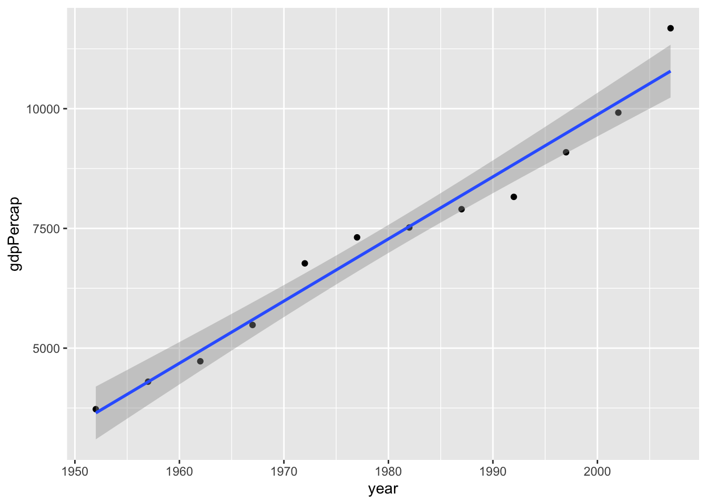
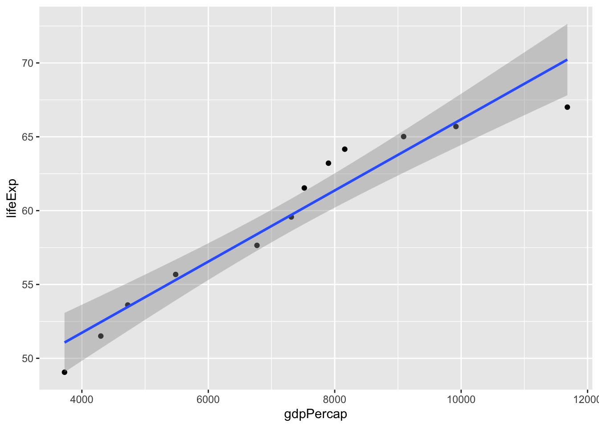

Partial Correlations (R,Python)
Course Overview
Red means that the page does not exist yet
Orange means that the page is started
As you may have heard, correlation does not equal causation. One possible reason for this is that there’s a third variable that explains an association. Let’s imagine that we are trying to understand whether life expectancy goes up over time and why. First of all, let’s check if lifeExpectancy is going up over time using the gapminder data:
library(gapminder)
library(ggplot2)
library(tidyverse)── Attaching packages ─────────────────────────────────────── tidyverse 1.3.2 ──
✔ tibble 3.1.8 ✔ dplyr 1.0.10
✔ tidyr 1.2.1 ✔ stringr 1.4.1
✔ readr 2.1.3 ✔ forcats 0.5.2
✔ purrr 0.3.5
── Conflicts ────────────────────────────────────────── tidyverse_conflicts() ──
✖ dplyr::filter() masks stats::filter()
✖ dplyr::lag() masks stats::lag()gapminder %>%
group_by(year) %>%
summarise(
lifeExp = mean(lifeExp),
gdpPercap = mean(gdpPercap)
) -> gapminder_by_year
cor.test(gapminder_by_year$year, gapminder_by_year$lifeExp)
Pearson's product-moment correlation
data: gapminder_by_year$year and gapminder_by_year$lifeExp
t = 18.808, df = 10, p-value = 3.91e-09
alternative hypothesis: true correlation is not equal to 0
95 percent confidence interval:
0.9498070 0.9962336
sample estimates:
cor
0.986158 ggplot(data = gapminder_by_year, aes(x = year, y = lifeExp)) +
geom_point() +
geom_smooth(method = lm, formula = 'y ~ x')import pandas as pd
import numpy as np
import matplotlib.pyplot as plt
import seaborn as sns
from scipy.stats import pearsonr
from gapminder import gapminder
gapminder_by_year = gapminder.groupby('year').agg({'lifeExp': 'mean', 'gdpPercap': 'mean'}).reset_index()
print(gapminder_by_year)
correlation, p_value = pearsonr(gapminder_by_year['year'], gapminder_by_year['lifeExp'])
print("Correlation coefficient:", correlation)
print("p-value:", p_value)
sns.scatterplot(data=gapminder_by_year, x='year', y='lifeExp')
sns.regplot(data=gapminder_by_year, x='year', y='lifeExp')
plt.xlabel('Year')
plt.ylabel('Life Expectancy')
plt.show()So now that we’ve confirmed that there is a positive association between the year and life expectancy, the next question is why? What changes from year to year that could explain increased life expectancy? Let’s investigate whether gdp per capita generally goes up each year, and whether it’s associated with life expectancy. If both of these things are true, then perhaps the increase in gdp per year is an explanation of the association between year and life expectancy.
Is year and gdp per capita associated?
cor.test(gapminder_by_year$year, gapminder_by_year$gdpPercap)
Pearson's product-moment correlation
data: gapminder_by_year$year and gapminder_by_year$gdpPercap
t = 17.039, df = 10, p-value = 1.022e-08
alternative hypothesis: true correlation is not equal to 0
95 percent confidence interval:
0.9393538 0.9954265
sample estimates:
cor
0.9832101 ggplot(data = gapminder_by_year, aes(x = year, y = gdpPercap)) +
geom_point() +
geom_smooth(method = lm, formula = 'y~x')
correlation, p_value = pearsonr(gapminder_by_year['year'], gapminder_by_year['gdpPercap'])
print("Correlation coefficient:", correlation)
print("p-value:", p_value)
sns.scatterplot(data=gapminder_by_year, x='year', y='gdpPercap')
sns.regplot(data=gapminder_by_year, x='year', y='gdpPercap')
plt.xlabel('Year')
plt.ylabel('gdpPercap')
plt.show()Whilst there are some outliers in earlier years, we seem to have found that gdp per capita has gone up.
Is gdp per capita and life expectancy associated?
cor.test(gapminder_by_year$gdpPercap, gapminder_by_year$lifeExp)
Pearson's product-moment correlation
data: gapminder_by_year$gdpPercap and gapminder_by_year$lifeExp
t = 11.137, df = 10, p-value = 5.875e-07
alternative hypothesis: true correlation is not equal to 0
95 percent confidence interval:
0.8663785 0.9895601
sample estimates:
cor
0.9619721 ggplot(data = gapminder_by_year, aes(x = gdpPercap, y = lifeExp)) +
geom_point() +
geom_smooth(method = lm, formula = 'y ~ x')
# Perform correlation test between gdpPercap and lifeExp
correlation, p_value = stats.pearsonr(gapminder_by_year['gdpPercap'], gapminder_by_year['lifeExp'])
# Print the correlation coefficient and p-value
print("Correlation coefficient:", correlation)
print("p-value:", p_value)
# Create scatter plot with regression line
sns.scatterplot(data=gapminder_by_year, x='gdpPercap', y='lifeExp')
sns.regplot(data=gapminder_by_year, x='gdpPercap', y='lifeExp', scatter=False)
plt.xlabel('GDP per capita')
plt.ylabel('Life Expectancy')
plt.show()So the above analysis suggests that all three variables are incredibly related. (you are unlikely to see such strong associations in real psychology experiments). But let’s now check in whether there’s still an association between the year and life expectancy once you control for GDP per capita. This partial correlation can be visualised as follows:
To calculate the partial correlation r value you control for the association between the two variables
\[ r_{xy*z} = \frac{r_{xy} - r_{xz} * r_{yz}}{\sqrt{(1-r^2_{xz})(1-r^2_{yz})}} = \frac{originalCorrelation - varianceExplainedByCovariate}{varianceNotExplainedByCovariate} \]
- \(x\) = The Year
- \(y\) = Life expectancy
- \(z\) = GDP per capita
- \(\sqrt{1- r^2_{xz}}\) = variance not explained by correlation between Year(\(x\)) and GDP (\(z\))
- \(\sqrt{1- r^2_{yz}}\) = variance not explained by correlation between Life Expectancy (\(y\)) and GDP (\(z\))
One way to think of the formula above is that: - the top-half represents how much variance is explained by overlap between the two main variables, subtracted by the variance of each variable with the confound - the bottom-half represents how much variance there is left to explain once you’ve removed associations between each main variable and the covariate.
Let’s see what the r value is after this partial correlation:
\[ r_{xy*z} = \frac{r_{xy} - r_{xz} * r_{yz}}{\sqrt{(1-r^2_{xz})(1-r^2_{yz})}} = \frac{.986158 - .9832101 * .9619721 }{\sqrt{(1-.9832101^2)(1-.9619721^2)}} = \frac{.040354}{.04984321} = .8092841 \]
Let’s check if the manually calculated partial r-value is the same as what R gives us:
library(ppcor)Loading required package: MASS
Attaching package: 'MASS'The following object is masked from 'package:dplyr':
selectpcor(gapminder_by_year)$estimate
year lifeExp gdpPercap
year 1.0000000 0.8092844 0.7629391
lifeExp 0.8092844 1.0000000 -0.2521280
gdpPercap 0.7629391 -0.2521280 1.0000000
$p.value
year lifeExp gdpPercap
year 0.000000000 0.00254769 0.006309324
lifeExp 0.002547690 0.00000000 0.454498736
gdpPercap 0.006309324 0.45449874 0.000000000
$statistic
year lifeExp gdpPercap
year 0.000000 4.1331001 3.5404830
lifeExp 4.133100 0.0000000 -0.7816358
gdpPercap 3.540483 -0.7816358 0.0000000
$n
[1] 12
$gp
[1] 1
$method
[1] "pearson"import pingouin as pg
# Calculate partial correlation with p-values, estimates, and statistics
partial_corr1 = pg.partial_corr(data=gapminder_by_year, x="gdpPercap", y="lifeExp", covar="year", method='pearson')
partial_corr2 = pg.partial_corr(data=gapminder_by_year, x="year", y="gdpPercap", covar="lifeExp", method='pearson')
partial_corr3 = pg.partial_corr(data=gapminder_by_year, x="lifeExp", y="year", covar="gdpPercap", method='pearson')
coef1 = partial_corr1['r'].values[0]
coef2 = partial_corr2['r'].values[0]
coef3 = partial_corr3['r'].values[0]
p_value1 = partial_corr1['p-val'].values[0]
p_value2 = partial_corr2['p-val'].values[0]
p_value3 = partial_corr3['p-val'].values[0]
# Create a matrix
matrix1 = np.zeros((3, 3))
# Assign the interaction values
matrix1[0, 1] = coef3
matrix1[1, 0] = coef3
matrix1[0, 2] = coef2
matrix1[2, 0] = coef2
matrix1[1, 2] = coef1
matrix1[2, 1] = coef1
# Set the diagonal to 1
np.fill_diagonal(matrix1, 1)
# Create a DataFrame from the matrix
matrix_coef = pd.DataFrame(matrix1, columns=['year', 'lifeExp', 'gdpPercap'], index=['year', 'lifeExp', 'gdpPercap'])
# Create a matrix
matrix2 = np.zeros((3, 3))
# Assign the interaction values
matrix2[0, 1] = p_value3
matrix2[1, 0] = p_value3
matrix2[0, 2] = p_value2
matrix2[2, 0] = p_value2
matrix2[1, 2] = p_value1
matrix2[2, 1] = p_value1
# Set the diagonal to 1
np.fill_diagonal(matrix2, 1)
# Create a DataFrame from the matrix
matrix_p_val = pd.DataFrame(matrix2, columns=['year', 'lifeExp', 'gdpPercap'], index=['year', 'lifeExp', 'gdpPercap'])
# Print the resulting matrix
print(matrix_p_val)
# Print the resulting matrix
print(matrix_coef)Yes, the pearson correlation between year and life expectancy is .8092844, so the difference of .0000003 is a rounding error from the manual calculations above. Just to confirm that this is a rounding error, here’s what you get if you complete the same steps but with the estimate part of the correlation objects instead:
x.y.cor <- cor.test(gapminder_by_year$year, gapminder_by_year$lifeExp)
x.z.cor <- cor.test(gapminder_by_year$year, gapminder_by_year$gdpPercap)
y.z.cor <- cor.test(gapminder_by_year$gdpPercap, gapminder_by_year$lifeExp)
(x.y.cor$estimate - x.z.cor$estimate * y.z.cor$estimate)/sqrt((1-x.z.cor$estimate^2) * (1 - y.z.cor$estimate^2)) cor
0.8092844 import scipy.stats as stats
import numpy as np
# Calculate correlation coefficients
x_y_cor = stats.pearsonr(gapminder_by_year['year'], gapminder_by_year['lifeExp'])[0]
x_z_cor = stats.pearsonr(gapminder_by_year['year'], gapminder_by_year['gdpPercap'])[0]
y_z_cor = stats.pearsonr(gapminder_by_year['gdpPercap'], gapminder_by_year['lifeExp'])[0]
# Calculate the desired value
result = (x_y_cor - x_z_cor * y_z_cor) / np.sqrt((1 - x_z_cor**2) * (1 - y_z_cor**2))
# Print the result
print(result)Confirming that the difference in the manual calculation is a rounding error. Note that the numbers you get from R may be rounded numbers, and so your calculations may reflect the rounding.
To conclude, as there is still an association between Year and Life Expectancy once controlling for GDP, this partial correlation is consistent with GDP not being the only explanation for why Life Expectancy goes up each year.
Question 1
What does a variable need to correlate with to be a viable candidate as a covariate?